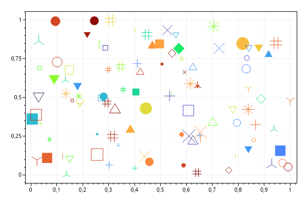
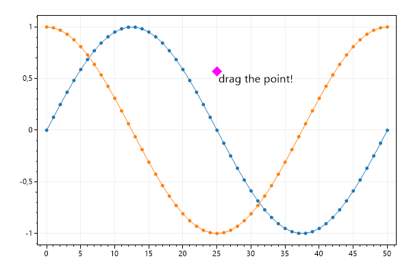
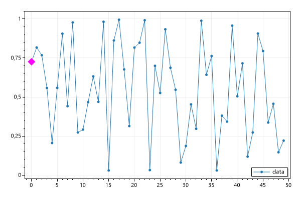
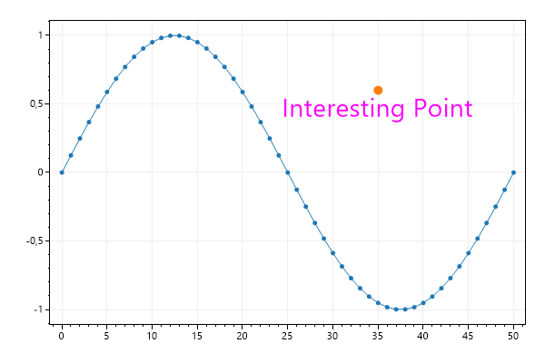
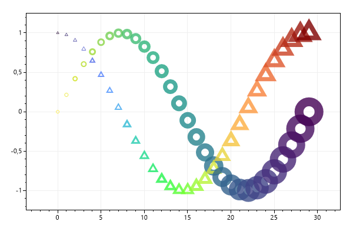

This page contains recipes for the Marker category.
Visit the Cookbook Home Page to view all cookbook recipes.
Visit the Cookbook Home Page to view all cookbook recipes.
Marker
You can place individual markers anywhere on the plot.
var plt = new ScottPlot.Plot(600, 400);
var colormap = ScottPlot.Drawing.Colormap.Turbo;
Random rand = new(0);
for (int i = 0; i < 100; i++)
{
plt.AddMarker(
x: rand.NextDouble(),
y: rand.NextDouble(),
size: 5 + rand.NextDouble() * 20,
shape: Marker.Random(rand),
color: colormap.RandomColor(rand));
}
plt.SaveFig("marker_quickstart.png");

Draggable Marker
A special type of marker exists which allows dragging with the mouse.
var plt = new ScottPlot.Plot(600, 400);
plt.AddSignal(ScottPlot.DataGen.Sin(51));
plt.AddSignal(ScottPlot.DataGen.Cos(51));
var myDraggableMarker = new ScottPlot.Plottable.DraggableMarkerPlot()
{
X = 25,
Y = .57,
Color = Color.Magenta,
MarkerShape = MarkerShape.filledDiamond,
MarkerSize = 15,
Text = "drag the point!",
};
myDraggableMarker.TextFont.Size = 16;
plt.Add(myDraggableMarker);
plt.SaveFig("marker_draggable.png");

Draggable Marker Snap
This example shows how to add a draggable marker which is constrained to positions defined by an array of X/Y pairs.
var plt = new ScottPlot.Plot(600, 400);
// create random data and display it with a scatter plot
double[] xs = DataGen.Consecutive(50);
double[] ys = DataGen.Random(new Random(0), 50);
plt.AddScatter(xs, ys, label: "data");
// place the marker at the first data point
var marker = plt.AddMarkerDraggable(xs[0], ys[0], MarkerShape.filledDiamond, 15, Color.Magenta);
// constrain snapping to the array of data points
marker.DragSnap = new ScottPlot.SnapLogic.Nearest2D(xs, ys);
plt.Legend();
plt.SaveFig("marker_draggableinvector.png");

Labeled Marker
Markers have an optional text label.
var plt = new ScottPlot.Plot(600, 400);
plt.AddSignal(DataGen.Sin(51));
var marker = plt.AddMarker(35, 0.6);
marker.Text = "Interesting Point";
marker.TextFont.Color = Color.Magenta;
marker.TextFont.Alignment = Alignment.UpperCenter;
marker.TextFont.Size = 28;
plt.SaveFig("marker_labeled.png");

Marker Line Width
Markers have options that can be customized, such as line width.
var plt = new ScottPlot.Plot(600, 400);
double[] ys1 = DataGen.Sin(30);
var cmap1 = ScottPlot.Drawing.Colormap.Viridis;
double[] ys2 = DataGen.Cos(30);
var cmap2 = ScottPlot.Drawing.Colormap.Turbo;
for (int i = 0; i < ys1.Length; i++)
{
double frac = i / (ys1.Length - 1f);
var circle = plt.AddMarker(i, ys1[i]);
circle.MarkerShape = MarkerShape.openCircle;
circle.MarkerSize = i + 5;
circle.MarkerLineWidth = 1 + i / 2;
circle.MarkerColor = cmap1.GetColor(1 - frac, .8);
var triangle = plt.AddMarker(i, ys2[i]);
triangle.MarkerShape = MarkerShape.openTriangleUp;
triangle.MarkerSize = i + 5;
triangle.MarkerLineWidth = 1 + i / 4;
triangle.MarkerColor = cmap2.GetColor(frac, .8);
}
plt.Margins(.2, .2);
plt.SaveFig("marker_linewidth.png");
